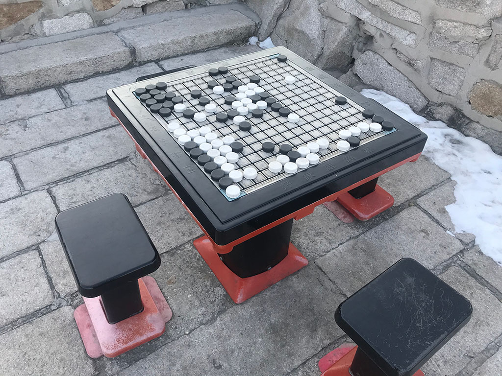

While hiking on a mountain last winter, I found this peculiar chessboard:
The pieces cannot be picked up, rather they can only be moved along horizontal or vertical lines. I wondered how dreadful it world be if someone is actually going to play chess on it.
And would it be easier on a computer? Sooner I realized this serves as a nice example to demonstrate how A*—one of the fundamental AI algorithms—works:
The objective is to find the shortest path of moving a piece to its destination. G is the actual cost so far, H is the estimated cost to the rest of the path, using a heuristic function, and F is the estimated total cost, which is the sum of the two: F = G + H. The open set consists of grids who are to be further searched and updated, and the close set includes those whose costs are determined and not to be changed. For every step during the search, the algorithm removes the grid with the smallest F value from the open set, add it to the close set, and add its adjacent grids to the open set or update their costs if possible. When the destination is added to the close set, the shortest path is found.
- In order to find the optimal solution, the heuristic function must be optimistic, i.e., no more expensive than the actual cost. Manhattan distance seems a viable option and it approximates the actual cost best. However it may lead to too many candidates with the same F values all at once. The search may suffer from inefficiency as a result. To solve this problem, I subtract a slight penalty from it: H(x) = Manhattan(x, destination) - k / Euclidean(x, destination), where k is a very small value.
- If the objective is to simply find an arbitrary path (not necessarily the shortest), then you can stop the algorithm as soon as the destination is added to the open set. Moreover, you can set the G to be always 0, so the algorithm becomes totally greedy (faster for simple cases but slower for complicated cases).
- If H is always 0, it degrades to Dijkstra algorithm. Since no heuristic information is leveraged, it is invariably outperformed by A* (imagine the search goes the opposite direction half the time).